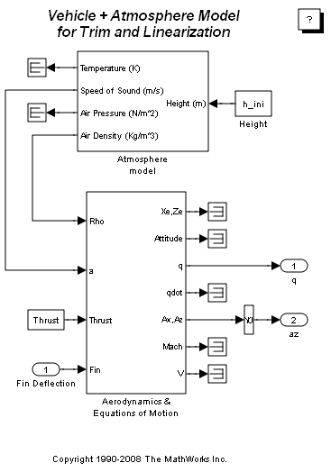
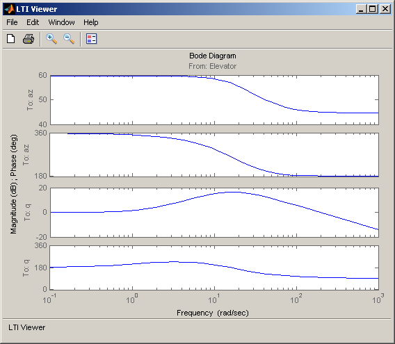

機体の定常化と線形化
Simulink® Control Design™ の使用による機体の定常化と線形化
標準的な設計手法で自動操縦を設計するには、定常化した多くの飛行条件に対する機体のピッチのダイナミクスの線形モデルが必要です。 MATLAB® では、定常化条件を決定し、線形状態空間モデルを非線形 Simulink® および Aerospace Blockset™ モデルから直接導き出すことができます。 時間を節約でき、モデルの検証にも役立ちます。 Simulink Control Design で提供されている関数を使用することにより、機体の動作を開ループ周波数 (または時間) 応答の観点から可視化できます。
目次
誘導モデルの初期化
最初の問題は、昇降舵の偏差と、結果として得られる定常化した本体比 (q) を見つけることです。これにより、ミサイルが設定速度で飛行しているときの所定の入射角値が生成されます。 定常化条件が見つかると、その定常化条件周りの状態での摂動のダイナミクスに対する線形モデルを導出できます。
open_system('aero_guidance_airframe');
 状態値の定義
h_ini = 10000/m2ft; % Trim Height [m] M_ini = 3; % Trim Mach Number alpha_ini = -10*d2r; % Trim Incidence [rad] theta_ini = 0*d2r; % Trim Flightpath Angle [rad] v_ini = M_ini*(340+(295-340)*h_ini/11000); % Total Velocity [m/s] q_ini = 0; % Initial pitch Body Rate [rad/sec]
操作点と状態仕様の設定
最初の状態仕様は Position 状態、2 番目の状態仕様は Theta です。 どちらも既知のものですが、定常状態にはありません。 3 番目の状態仕様は、変数 w が定常状態にあるボディ軸の角度比です。
opspec = operspec('aero_guidance_airframe');
opspec.State(1).Known = [1;1];
opspec.State(1).SteadyState = [0;0];
opspec.State(2).Known = 1;
opspec.State(2).SteadyState = 0;
opspec.State(3).Known = [1 1];
opspec.State(3).SteadyState = [0 1];
操作点の検索、I/O の設定、線形化
op = findop('aero_guidance_airframe',opspec); io(1) = linio('aero_guidance_airframe/Fin Deflection',1,'in'); io(2) = linio('aero_guidance_airframe/Selector',1,'out'); io(3) = linio(sprintf(['aero_guidance_airframe/Aerodynamics &\n', ... 'Equations of Motion']),3,'out'); sys = linearize('aero_guidance_airframe',op,io);
Operating Point Search Report:
---------------------------------
Operating Report for the Model aero_guidance_airframe.
(Time-Varying Components Evaluated at time t=0)
Operating point specifications were successfully met.
States:
----------
(1.) aero_guidance_airframe/Aerodynamics & Equations of Motion/ Equations of Motion (Body Axes)/Position
x: 0 dx: 968
x: -3.05e+003 dx: -171
(2.) aero_guidance_airframe/Aerodynamics & Equations of Motion/ Equations of Motion (Body Axes)/Theta
x: 0 dx: -0.216
(3.) aero_guidance_airframe/Aerodynamics & Equations of Motion/ Equations of Motion (Body Axes)/U,w
x: 968 dx: -14.1
x: -171 dx: -7.44e-008 (0)
(4.) aero_guidance_airframe/Aerodynamics & Equations of Motion/ Equations of Motion (Body Axes)/q
x: -0.216 dx: 3.36e-008 (0)
Inputs:
----------
(1.) aero_guidance_airframe/Fin Deflection
u: 0.136 [-Inf Inf]
Outputs:
----------
(1.) aero_guidance_airframe/q
y: -0.216 [-Inf Inf]
(2.) aero_guidance_airframe/az
y: 199 [-Inf Inf]
定常化した状態の選択、LTI オブジェクトの作成、ボード線図のプロット
airframe = ss(sys.A(3:4,3:4),sys.B(3:4,:),sys.C(:,3:4),sys.D); set(airframe,'inputname',{'Elevator'}, ... 'outputname',[{'az'} {'q'}]); ltiview('bode',airframe); bdclose('aero_guidance_airframe');